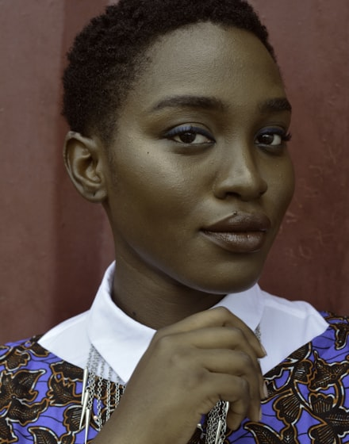

小说 Agent，把故事拆成分镜
全面应用 豆包大模型，贴一段小说，自动拆出角色 · 场景 · 道具 · 分镜剧本
粘贴小说
AI 写小说
自由画布
期望分镜数
0 / 4000
支持 4000 字以内中文小说
跳过审核，直接看分镜结果 →
我的项目
全部 ›示例
残灯巷的修表人
示例

都市夜归人
示例
花店与雨季
1提取资产
2审核确认
3生成分镜
✓已确认 3 个角色 · 2 个场景 · 2 个道具，分镜剧本生成完毕
提取到 3 个角色 · 2 个场景 · 2 个道具
点一下文字即可直接修改，确认后开始生成分镜；也可以跳过审核。
角色
主角沈师傅
外貌：六十多岁，背微驼，圆框老花镜，靛蓝粗布褂子
性格：沉默寡言、专注、藏着旧情
配角林小满
外貌：二十出头，花店学徒，撑伞少女
性格：真诚、念旧、情绪外露
回忆人物云
外貌：仅在表背刻字中出现，未正面描写
性格：沈师傅年轻时的定情之人
场景
场景残灯巷旧钟表铺
描述：巷尾旧铺，褪色齿轮招牌，昏黄台灯
情绪：安静、怀旧
场景雨夜青石板巷
描述：小雨，青石板泛水光，铺外的夜色
情绪：湿润、克制的伤感
道具
道具黄铜怀表
外观：缠枝莲表壳，背刻「赠阿沈，民国廿三年，云」
作用：串起两代人的定情信物
道具修表工具
外观：镊子、放大镜、极细钢丝、台灯
作用：承载「修复」这一核心动作
分镜剧本 · 共 5 个分镜
#01全景4s情绪：怀旧 · 静
雨夜，残灯巷尽头的旧钟表铺亮着一盏昏黄台灯，褪色的齿轮招牌在雨里若隐若现，镜头缓缓推近店门。
#02中景3s情绪：急切
林小满撑伞冲进铺子，雨水顺着伞沿滴落，她紧攥着一只停摆的黄铜怀表，神情焦急。
#03特写5s情绪：专注
台灯下，沈师傅布满老茧的手指用镊子撬开怀表后盖，放大镜里游丝纤细，一颗灰尘卡在齿轮间。
#04近景4s情绪：动容
怀表重新滴答走动，林小满眼眶泛红；沈师傅的目光却落在表背的刻字上，手微微颤抖。
#05全景5s情绪：释然
雨停了，铺子里只剩怀表的滴答声；镜头拉远，老人与少女的身影定格在昏黄灯光中。
查看原始 JSON
{
"project_id": "a1b2c3",
"scenes": [
{
"index": 1,
"shot_type": "全景",
"visual_description": "雨夜，残灯巷尽头的旧钟表铺亮着昏黄台灯…",
"characters_present": ["沈师傅"],
"dialogue": "",
"caption": "残灯巷尽头，有一家修表三十年的铺子",
"mood": "怀旧",
"duration_hint": 4
}, { ... }
]
}